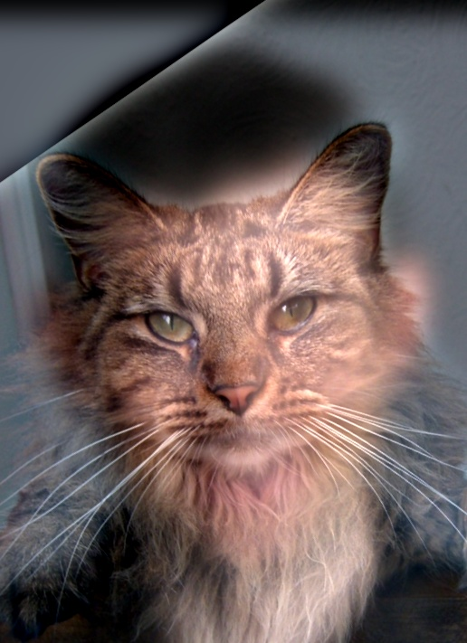
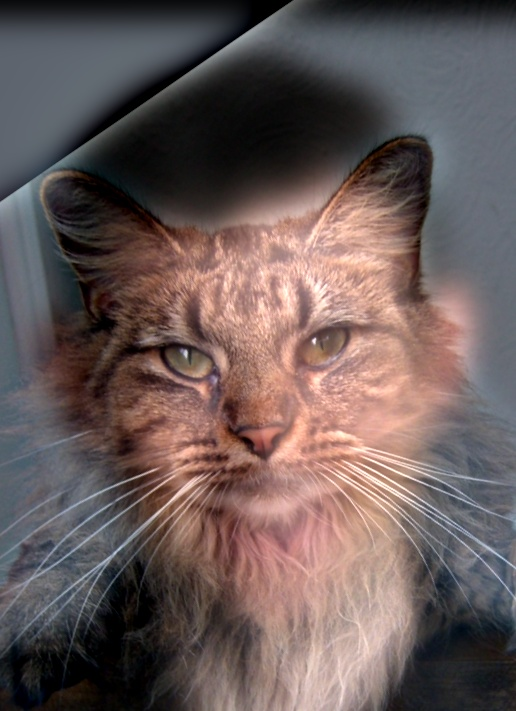
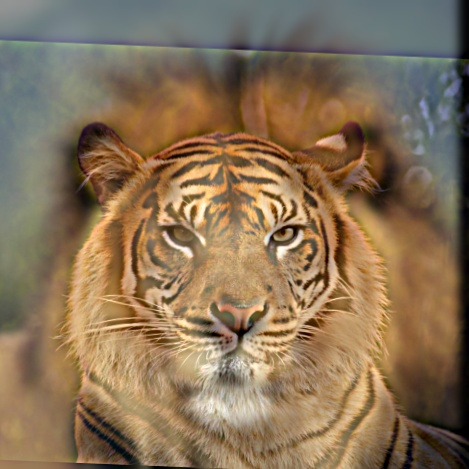
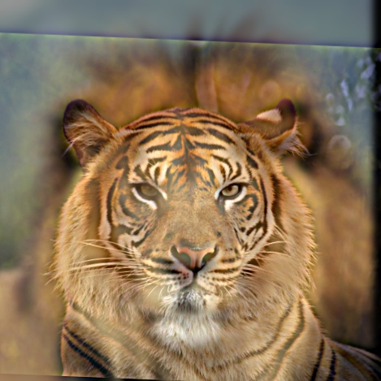

This part explores implementing convolution from scratch. Below is the original image:
This image was convolved with 3 different filters: box filter, x difference filter, and y difference filter. Padding was applied so that all possible overlaps between the image and kernel were accounted for in the output.
The box filter acts as a low pass filter that performs local averaging within a certain box around each pixel. This is the result of convolving the above image with the box filter:
As expected, the result is a blurred version of the original image. Another important observation is the added black-ish border around the edge of the image. This is due to the zero (black) padding that is applied to the convolved image. When averaging is performed for edge pixels, those values are averaged with many zero values, adding a black-ish tint around the edge of the image.
The x difference (d_x) filter acts as an edge detector in the x direction. This is the result of convolving the above image with the d_x filter:
The result shows large changes in the x direction (horizontal derivatives), which correspond to vertical edges. A good example of this is the tower in the background, whose vertical edges stand out in this resulting image. The result of padding with this filter is that the resulting image doesn't decrease in size, as would be the case without padding.
The y difference (d_y) filter acts as an edge detector in the y direction. This is the result of convolving the above image with the d_y filter:
The result shows large changes in the y direction (vertical derivatives), which correspond to horizontal edges. A good example of this is the top of my shirt, whose horizontal edges stand out in this resulting image. Once again, the result of the padding is that the image size does not decrease.
The first implementation of convolution is slow, meaning that it is naive and uses 4 for loops. Here is a code snippet:
def slow_convolve(image, kernel, padding=False):
# flip the kernel
kernel = np.flip(kernel, axis=0)
kernel = np.flip(kernel, axis=1)
k_x, k_y = kernel.shape
if padding:
image = np.pad(image, pad_width=((k_x-1, k_x-1), (k_y-1, k_y-1)), mode='constant')
im_x, im_y = image.shape
rows = im_x - k_x + 1
cols = im_y - k_y + 1
assert rows > 0 and cols > 0, "Kernel dimensions cannot be larger than image dimensions"
result = np.zeros((rows, cols))
for i in range(rows):
for j in range(cols):
val = 0
for k in range(k_x):
for l in range(k_y):
val += image[i+k][j+l] * kernel[k][l]
result[i][j] = val
return result
The second implementation of convolution is faster, meaning that it speeds up the inner 2 for loops by replacing them with numpy pairwise matrix multiplication. Here is a code snippet:
def fast_convolve(image, kernel, padding=False):
# flip the kernel
kernel = np.flip(kernel, axis=0)
kernel = np.flip(kernel, axis=1)
k_x, k_y = kernel.shape
if padding:
image = np.pad(image, pad_width=((k_x-1, k_x-1), (k_y-1, k_y-1)), mode='constant')
im_x, im_y = image.shape
rows = im_x - k_x + 1
cols = im_y - k_y + 1
assert rows > 0 and cols > 0, "Kernel dimensions cannot be larger than image dimensions"
result = np.zeros((rows, cols))
for i in range(rows):
for j in range(cols):
result[i][j] = np.sum(np.multiply(image[i:i+k_x, j:j+k_y], kernel))
return result
Both implementations are functionally the same as scipy.signal.convolve2d. However, the three functions differ in runtime:
These timings make sense because of the difference in implementations and kernel size. The largest kernel is the box filter, which is why slow convolve is especially slow for large kernels (the inner for loops perform iteration over the entire 2D kernel). Using the elementwise operator thus offers great speedups for large kernels. Therefore, we can also see that the speedups for smaller kernels aren't as significant. Somewhat counterintuitively, for smaller kernels, the fast implementation introduces some overhead which then causes the fast implementation to be slower than the slow implementation. We also see that the scipy implementation is highly optimized and thus super fast for all kernel sizes.
This part explores edge detection using the difference operator on the following image:

The following are the results of applying the finite difference kernels in the x (left) and y (right) directions to the above image:
These results are consistent with part 1.1. The d_x filter detects vertical edges. For instance, the left image has the edge of the tall building in background. The d_y filter detects horizontal edges. For instance, the right image has the man's shoulder. These individual components are used to obtain the gradient magnitude image, which shows the magnitude of the gradient at each point in the image:
Edges can be detected by binarizing the gradient magnitude image, since edges can be seen as regions of the image above a certain gradient value. The threshold was experimentally determined to be pixels above the 94th percentile, giving the following result:
As this result shows, this threshold is not perfect. However, for this naive approach, it serves as a good tradeoff between detecting too little (that is, a higher threshold would start to cut out key contours and edges in the image) and detecting too much (a lower threshold starts to capture too much noise, which can already be seen, especially toward the bottom of the image). Consequently, we see that most of the key edges in the image are detected with a little bit of noise.
Since the previous edge detection method was noisy, this part applies Gaussian smoothing prior to edge detection to alleviate some of the detected noise. The Gaussian filter is the following:
This filter was obtained using a kernel size of 5 x 5 and a sigma value of 1.0. These values were chosen by experimentally observing where the kernel is large enough so that the Gaussian doesn't get cut off but also small enough so that there aren't too many black (negligibly-weighted) pixels. Then, the original image (same as in part 1.2) is convolved with a Gaussian filter to achieve the following smoothed image:
The finite difference kernels are then applied to this smoothed image in the x (left) and y (right) directions:
We see similar results to part 1.2. Using similar techniques, the gradient magnitude image can be computed for the smoothed image:
Finally, edges can be detected by again binarizing the gradient magnitude image with the same threshold:
This result shows that Gaussian smoothing can help alleviate a lot of the noise that was previously present with the finite differencing method. The same main edges are detected, but most the noise is no longer present, indicating that Gaussian smoothing as a pre-processing step can help achieve better edge detection.
A similar result can be achieved by merging the Gaussian smoothing convolution with the finite differencing convolution. Since convolution is associative, the two kernels can be convolved to alleviate the need for multiple convolutions (per direction). This creates Derivative of Gaussian (DoG) filters for both directions, which are visualized below (x on the left, y on the right):
This kernel works is the result of the association of convolutions, which is why it looks like a combination of the finite difference and Gaussian filters. These DoG filters are then applied to the original (unsmoothed) image in the x (left) and y (right) directions:
Since the DoG kernel should be the equivalent to the smoothing and finite differencing being performed one after another, we can see that these images find the same edges as a the previous result. The gradient magnitude image (left) and binarized edge detection image (right) also give the same result:
This gives us the same, cleaned up edges as before.
This part explores image sharpening, which is essentially adding more high frequencies to the image. In this part, we sharpen the following image of the Taj Mahal:

First, we use a Gaussian kernel, which acts as a low pass filter, to extract low frequencies:
Then, to obtain the high frequencies, we subtract out the low frequencies from the original image, leaving us with edges, textures, and fine details in the original image:
Finally, to sharpen the image, we add these back to the original image, giving us the following result:
Adding higher frequencies gives the illusion of a sharper image, which can be seen by comparing the above result with the original image. Instead of performing these operations separately, we can also combine them into a single convolution operation called the unsharp mask filter. The following is the derivation:
Let O = the original image
Let H = high frequencies in O
Let L = low frequencies in O
Let S = the desired sharpened image
Let G = the Gaussian kernel of dimensions (k, k)
Let I_n = the Identity kernel of dimensions (n, n)
S = O + α * H
S = O + α * (O - L) # high frequencies = original image - low frequencies
S = (1 + α) * O - α * L
S = (1 + α) * O - α * G * O # low frequencies = Gaussian kernel * original image
S = (1 + α) * I_k * O - α * G * O # convolution with Identity doesn't change result, use to match dimensions with G
S = ((1 + α) * I_k - α * G) * O
We can apply scalar multiplication to all elements of a kernel. Note that we must match the dimensions between two kernels in order to add/subtract them, which is necessary since convolution is distributive. We also assume an odd kernel dimension value.
In relation to blur filters, which extract low frequencies, and high frequencies, this filter extracts high frequencies and adds them to the original image. Given this formula, we can implement a single unsharp mask filter that can be used to sharpen an image with a single convolution:
unsharp_mask_filter = (1 + α) * I_k - α * G
We can use this filter to directly go from the first image of the Taj Mahal to the last sharpened one, getting this identical result.
Another example of this process is shown here. From left to right, these are the original image, blurred image (low frequencies), high frequencies, and sharpened image:
The equivalent result from using the filter is shown here:
Finally, trying out a sharp image (left image) that is first blurred (right image):
Using three different sharpening factors (α), we get the following results, where α = 1 (leftmost), 3 (middle), and 5 (rightmost):
We can see that, while the quality of the original image is never recovered, sharpening does help allieviate the effect of blurring. Additionally, we see that higher alpha values sharpen the image more and more. When alpha is too low (as in the left image), the image remains blurry. When alpha is too high (as in the right image), the image seems artificially sharpened.
This part walks through the process of creating a hybrid image. We start with two separate photos:


The first step was to align the two images based on two points in the image. In this example, I used points along the edge of both fruits as points of overlap, giving the following set of aligned images. Because the original images are relatively similar in shape and orientation, this only resulted in slight resizing and other transformations:
Now, the hybrid image can be computed. A hybrid image works by combining the high frequencies of one image with the low frequencies of another. This creates an illusion because when an image is being viewed up close, high frequencies dominate (so one image is seen), but from afar, only low frequencies are seen (so another image appear). This means both images must ben individually filtered. First, we apply a high-pass filter to the apple (which will therefore be seen up close) by subtracting a Gaussian-filtered apple from the original apple. Then, we apply a low-pass filter to the orange (which will therefore be seen from afar) by applying a Gaussian-filtered:
We can also visualize both images, pre (left) and post (right) filtering, in Fourier space. First, the apple:
High-pass filters should keep high frequencies and remove low frequencies. In the Fourier domain, lower frequencies are closer to the center of the image. We can see that the brightness at the center of the spectrum are removed, which is the result of low pass filtering. Second, the orange:
Low-pass filtering does the opposite by keeping low frequencies and removing high ones. We see that all the remaining density is closer to the center. Finally, we combine the two images to obtain the following result (and its spectrum) with an apple cutoff frequency of 2 and an orange cutoff frequency of 4:
The effect of this is the following:
At the start, when the image is small (simulating viewing from afar), the orange is more visible. Once the image zooms in (simulating viewing up close), the apple is more visible.
This process is also used to recreate the hybrid image of Derek and his cat (with some cropping):

 

Or a hybrid image of a tiger and a lion:
 

This part explores how to blend two images together by creating Gaussian and Laplacian image stacks. In particular, we can blend the following images of an apple and an orange:


The first step is to create a Gaussian stack of each image so we can visualize the image at different degrees of low-pass filtering:
From these, we can create a Laplacian stack, which decomposes the images into different frequency ranges:
Then, using a binary mask that splits the image into two halfs over a blending region (which was set to be 40% of the image width here), we can blend the images. Each level of the Laplacian stack is individually blended using the Gaussian stack of the mask:
This creates weighted Laplacian stacks of the original images (corresponding to the left (a, d, g) and middle (b, e, h) columns of Figure 3.42 from the paper by Burt and Adelson):
Each stack can be individually collapsed to produce the bottom images in those columns (j and k):
The Laplacian stack of the blended image is simply the sum of the two weighted Laplacian stacks (corresponding to the right column (c, f, i) of Figure 3.42):
The final blended image (l) can be recovered by collapsing (summing) its Laplacian stack:

Another example of multiresolution blending is shown here, with two images of the beach in the day and at night:
This technique can also be used to blend along nonlinear boundaries. For instance, we can replace the background of Mona Lisa with that of Starry Night:
The process remains the same, starting with a Gaussian stack of each image:

From these, we get the Laplacian stacks:

We can also visualize the Gaussian stack of the mask, which is now nonlinear:
Weighted Laplacian stacks of both images:
These Laplacian stacks can also be collapsed:
The Laplacian stack of the blended image:
Finally, we get the final blended image:
One of the biggest things I took away from this project was the process of visual debugging, especially when working on the hybrid images component. Visualizing each individual stack, as well as intermediate results, was crucial for guaranteeing the correctness of each algorithm I implemented. It helped me catch subtle errors and better understand how different filtering steps affect the result, giving me better intuition for how image transformations behave at each stage.